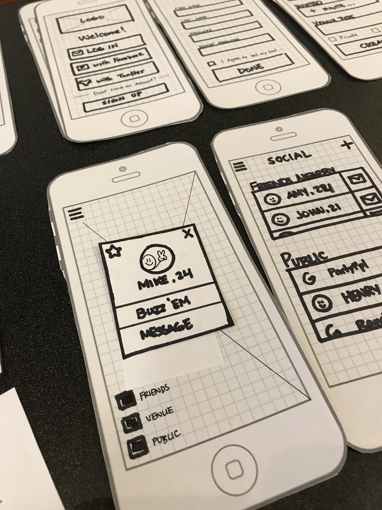

About Me
I studied computer science during my early years in undergrad, and realized how amazingly fun software development was; however there was only so much a developer can do to create awesome software for people. I then found this new field called User Experience Design and instantly fell in love with everything it stood for the users. Understanding the users is the best way to create better experiences for them. Now I'm an aspiring fullstack UX Designer that strives in highly functional and collaborative teams in the intersection of design and development.
Philsophy
UI:person ≈ UX:personality
I am passionate about designing interfaces that establish an emotional trust with users. UI is to a person, as its UX is to his/her personality. I believe users establish an emotional connection to every UI they interact with, like first impressions of a new friend. UX will prove to the users that its UI is easy-going, dependable, and relatable. These are the interfaces that users will keep coming back to, and the ones I aim to craft.

A few things about me
My story
My great journey thus far, thanks to everyone who made it possible. Like all great design, I am on a constant journey to iterate myself towards becoming a better designer.
2012-2013
Creative Director
@ Friendslearn Inc
Kickstarted my creative career by directing a team of 5 3D artists at a educational-video game startup. An overwhelming yet amazing experience to deliver a mobile game that teaches children about nutrition and healthy eating habits.
Check it out
2015-2017
Co-founder & Designer
@ StepFor LLC
Crazy ideas come to life when you strive and push for it.
Two colleagues and I founded a startup that empowered users
to transform their daily steps to donations to charities,
backed by corporate sponsors.
Check it out here
or
here
2017
UI Designer
@ UM Institute for Social Research
I had the honor of serving an amazing team of researchers in
designing an iOS research-application for post-cardiac
patients in rehab.
Check it out
2017
Designer I & Design Team Lead
@ Design Clinic
Began as a Designer 1 within a team of 4 UX designers to consult and deliver a fast-paced client-facing project. Served as a Design Team Lead within a team of 4 for the second project I was given.
2018-Present
UX Designer
@ Dick's Sporting Goods
Joined the DSG family at the beginning of its exciting technology transformation journey! Have been with various teams to improve our internal Enterprise facing solutions, internal HR solutions platforms, and Flagship Mobile Apps!
What next?